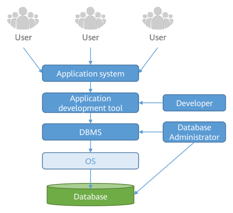
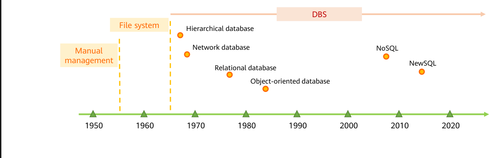
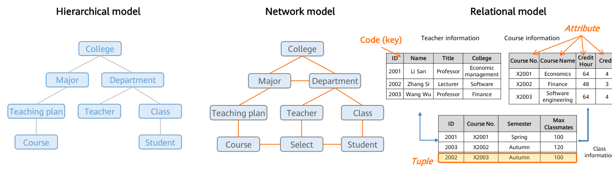

---
| Dimension | 1. Manual Management (Mid-1950s) | 2. File System (Late 1950s – Mid-1960s) | 3. DBS Stage (Late 1960s – Present) |
|---|---|---|---|
| Application | Scientific computing | Scientific computing & management | Large-scale & distributed data management |
| Hardware | Paper tapes, punch cards (no direct access storage) | Magnetic tapes, disks, magnetic drums | Large-capacity disks, arrays, on-demand expansion |
| Software / Manager | None (managed by User/Program) | File System | DBMS / DBS |
| Data Sharing | No sharing; high redundancy | Poor sharing; high redundancy | Good sharing; low redundancy |
| Data Independence | Poor (program-bound) | Good physical independence; poor logical independence | High physical & good logical independence |
| Data Structuring | Unstructured | Structured inside a record; unstructured as a whole | Unified data model & overall structuring |

---
TRUNCATE; SQL:2011: Temporal/time-series; SQL:2016: JSON.